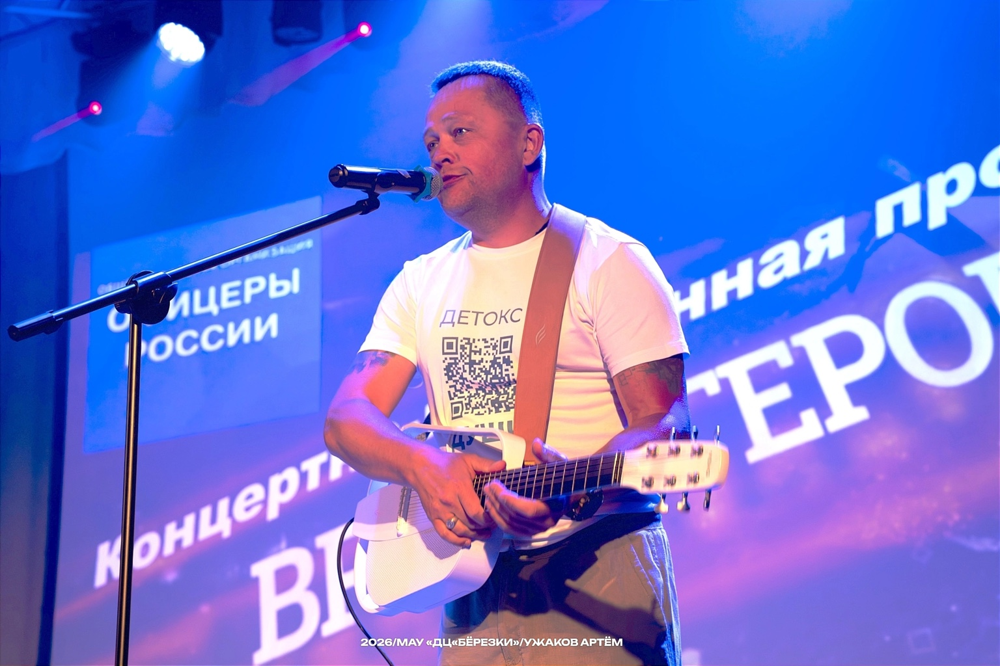
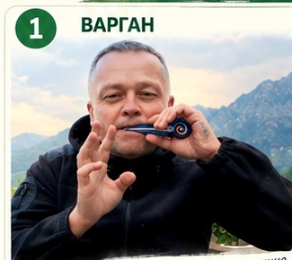
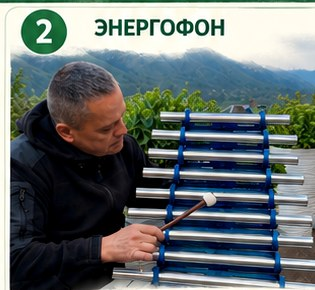
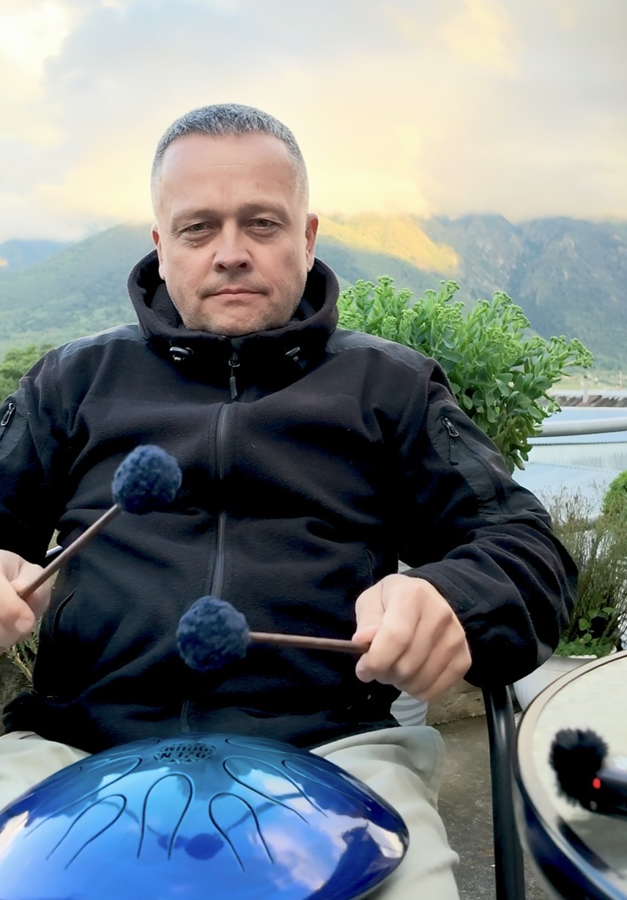

Однодневные поездки из Кисловодска
Короткие маршруты по КМВ. Ближайшее направление уточняем вечером накануне выезда.
Там, где дорога становится музыкой.
Оздоровительные путешествия и прогулки по Кавказу — живая песня, варган, тонг‑драм, природа и внимание к каждому человеку.
Короткие маршруты по КМВ. Ближайшее направление уточняем вечером накануне выезда.
Домбай, Архыз и другие направления. Маршрут выбираем с учётом погоды и состава группы.
Едем небольшой компанией, останавливаемся там, где хочется задержаться, смотрим, дышим, фотографируемся и слушаем, как горы отвечают музыке.
В программе могут быть прогулки, живая авторская песня, варганотерапия, звуковая ванна и спокойное общение. Без гонки за количеством локаций.

Сборные группы или индивидуальные прогулки для семьи, друзей и близких по духу людей.
Короткий формат рядом с Кисловодском.
Простор, ветер и большие виды.
Большой горный день без спешки.
Дорога, тишина и музыка высоты.
Инструменты становятся частью места, дороги и общего воспоминания.

Дыхание, вибрация, внутренняя тишина.

Пространственный живой звук и мягкая концентрация внимания.

Ровный ритм, созерцание и спокойный музыкальный привал.
«Не тур и не сеанс. Это день, после которого внутри становится тише».
MAX · Telegram · WhatsApp — по этому же номеру. Индивидуальный маршрут — в любой удобный день по предварительной заявке.
Согласуем дату, состав группы, погоду, продолжительность и точки остановок. Для ближайших сборных выездов направление подтверждается заранее.
Узнать ближайший маршрут